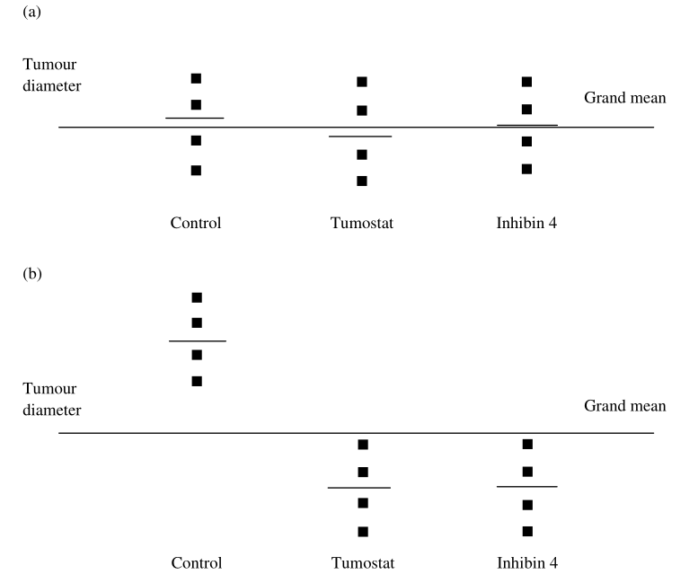

qt(p, df, lower.tail=TRUE)3 Comparaison de moyennes
3.1 Préambule
3.1.1 Nomenclature
Dans ce chapitre, nous supposons que:
La réponse \(Y\) est une variable quantitative continue qui suit une distribution normale;
L’hypothèse de test porte sur l’existence de différence(s) de la moyenne de \(Y\) entre plusieurs groupes;
Les groupes sont des niveaux du facteur/critère \(X\);
\(X\) est une variable discrète, souvent qualitative nominale;
-
\(X\) peut être fixe ou aléatoire:
fixe: on ne s’intéresse qu’aux niveaux étudiés, choisis spécifiquement (p. ex. mâle vs femelle);
aléatoire: on s’intéresse à tous les niveaux possibles, parmi lesquels on en a étudié certains choisis aléatoirement (p. ex. Espagne, Finlande et Pologne pour représenter l’UE).
3.1.2 Techniques de comparaison de moyennes
Dans le cas ou le jeu de données contient 2 niveaux pour \(X\) (c.à.d. 2 groupes) alors on effectue un test de \(t\). S’il y a plus de 2 niveaux pour \(X\) alors une analyse de variance à un critère de classification (ANOVA 1) est choisi. S’il y a plus d’un critère de classification pour \(X\) alors on aura un ANOVA2, ANOVA3, …
3.2 Comparaison de 2 moyennes
On distingue 2 cas pour les expériences où une variable continue \(Y\) est mesurée sur les individus appartenant à 2 groupes (A et B):
Soit une mesure du groupe A est associé avec 1 et 1 seule mesure du groupe B (et inversement): les données sont dites “pairées”;
Soit les mesures du groupe A ne sont pas associées aux mesures du groupe B: les données sont dites “indépendantes”.
Lire les valeurs critiques (fractiles) de la loi de t avec R
Pour trouver la valeur critique T dans R, vous pouvez utiliser la fonction qt(), qui utilise la syntaxe suivante :
où :
p: le niveau de signification à utiliser;
df: Les degrés de liberté;
lower.tail: Si TRUE, la probabilité à gauche de p dans la distribution t est renvoyée. Si FALSE, la probabilité à droite est renvoyée. La valeur par défaut est TRUE.
Test unilatéral à gauche
Supposons que nous voulions trouver la valeur critique de \(t\) pour un test unilatéral gauche avec un niveau de signification de 0,05 et un degrés de liberté = 18.
qt(p = 0.05, df = 18, lower.tail = TRUE)[1] -1.734064La valeur critique \(t\) est de -1,734. Ainsi, si la statistique du test est inférieure à cette valeur, les résultats du test sont statistiquement significatifs.
Test unilatéral à droite
Supposons que nous voulions trouver la valeur critique de \(t\) pour un test unilatéral à droite avec un niveau de signification de 0,05 et un degrés de liberté = 18.
qt(p = 0.05, df = 18, lower.tail = FALSE)[1] 1.734064La valeur critique \(t\) est de 1,734. Ainsi, si la statistique du test est supérieur à cette valeur, les résultats du test sont statistiquement significatifs.
Test bilatéral
Supposons que nous voulions trouver la valeur critique de \(t\) pour un test bilatéral avec un niveau de signification de 0,05 et un degrés de liberté = 18.
qt(p = 0.05/2, df = 18, lower.tail = FALSE)[1] 2.100922Chaque fois que vous effectuez un test bilatéral, il y a deux valeurs critiques. Dans le cas présent, les valeurs critiques de T sont 2,1 et -2,1.
Par conséquent, si la statistique du test est inférieure à -2,1 ou supérieure à 2,1, les résultats du test sont statistiquement significatifs.
3.2.1 Données pairées: test de \(t\) pairé
Par exemple, on mesure le temps mis par des sprinteurs pour couvrir le 100m lors de 2 jours de course consécutifs, pour vérifier l’existence d’un effet d’adaptation à un environnement non familier. On a alors les hypothèses suivantes:
\(H_0\): il n’y a pas de différence entre les 2 jours;
\(H_A\): il y a une différence entre les 2 jours.
Pour un test de \(t\) pairé on a \(t_{obs} = \frac{\bar{Y_D} - \mu_D}{SEM} = \frac{\bar{Y_D} - \mu_D}{\frac{S_D}{\sqrt{n - 1}}} \sim St(n-1)\).
En partant de l’exemple précédent dont les données onst présentées ici:
| Numéro | Temps de course (Jour 1) | Temps de course (Jour 2) | Différence |
|---|---|---|---|
| 1 | 13,5 | 13,6 | +0,1 |
| 2 | 14,6 | 14,6 | 0,0 |
| 3 | 12,7 | 12,6 | -0,1 |
| 4 | 15,5 | 15,7 | +0,2 |
| 5 | 11,1 | 11,1 | 0,0 |
| 6 | 16,4 | 16,6 | +0,2 |
| 7 | 13,2 | 13,2 | 0,0 |
| 8 | 19,3 | 19,5 | +0,2 |
| 9 | 16,7 | 16,8 | +0,1 |
| 10 | 18,4 | 18,7 | +0,3 |
Pour rappel, le test de \(t\) n’est rien d’autre qu’un test d’hypothèse sur une moyenne:
\(H_0\) :\(\mu = \mu_0\) , en d’autre termes la moyenne de la différence est égale à 0;
\(H_A\): \(\mu \neq \mu_0\), en d’autres termes, la moyenne de la différence est différente de 0.
A partir des données ci-dessus présentées on a:
Dégré de libertés (ddl) = \(n-1\) = 10 - 1 = 9;
\(\bar{X} = 0,100\), \(s = 0,1247\), \(n = 10\);
\(SEM = \frac{S_D}{\sqrt{n - 1}}\) = 0,0394.
Pour un dégré de liberté de 9 on a \(t_9 = \frac{0,10 - 0}{0,03944} = 2,5355\).
En utilisant la table ou R (voir ci-dessous) la valeur critique de \(t_9\) pour \(\alpha = 0,05\) est de \(2,262\) (\(t_{obs} = 2,5355 > t_{lu} = 2,263\)).
qt(p=0.05/2, df=9, lower.tail=FALSE)[1] 2.262157Par conséquent, la valeur de \(t\) se situe en dehors de l’intervalle dans lequel on s’attendrait à ce que \(95 \%\) des statistiques \(t\) générées par des échantillons de \(n = 9\) à partir d’une population où \(\mu = 0\). Il a donc été conclu que la moyenne de la population des différences de temps de course était significativement différente (\(P < 0,05\)) d’une moyenne attendue de zéro.
3.2.2 Données indépendantes: test de \(t\) indépendant
Un écologiste a échantillonné la longueur de la coquille de 15 palourdes d’eau douce dans chacun de deux lacs afin de déterminer si ces échantillons étaient susceptibles de provenir de populations ayant la même longueur moyenne de coquille.
| Lac A | Lac B |
|---|---|
| 25 | 45 |
| 40 | 37 |
| 34 | 36 |
| 37 | 38 |
| 38 | 49 |
| 35 | 47 |
| 29 | 32 |
| 32 | 41 |
| 35 | 38 |
| 44 | 45 |
| 27 | 33 |
| 33 | 39 |
| 37 | 46 |
| 38 | 47 |
| 36 | 40 |
Pour cette étude on a les hypothèses suivantes:
\(H_0: \mu_A = \mu_B\): il n’y a pas de différence de taille moyenne entre les 2 lacs;
\(H_1: \mu_A \neq \mu_B\): il y a une différence de taille moyenne entre les 2 lacs.
Pour tester les hypothèses, il faut tenir compte de la taille des deux populations desquelles dépend le \(t_{obs}\) :
- Si \(n_A = n_B\): \(t_{obs} = \frac{(\bar{Y_A} - \bar{Y_B}) - (\mu_A - \mu_B)}{\sqrt{\frac{S^2_A}{n_A} + \frac{S^2_B}{n_B}}} \sim St(n_A + n_B - 2)\)
- Si \(n_A \neq n_B\): \(t_{obs} = \frac{(\bar{Y_A} - \bar{Y_B}) - (\mu_A - \mu_B)}{\sqrt{(\frac{(n_A - 1) \times S^2_A + (n_B - 1) \times S^2_B}{n_A + n_B - 2})(\frac{1}{n_A} + \frac{1}{n_B})}} \sim St(n_A + n_B - 2)\).
Notre étude se situant dans le premier cas, on a alors:
\(t_{obs} = \frac{(34,67 - 40,87) - (0)}{\sqrt{\frac{24,67}{15} + \frac{28,69}{15}}} = -3,287\).
Avec le dégré de liberté \(df = n_A + n_B - 2 = 15 + 15 - 2 = 28\), on a :
qt(p=0.05/2, df=28, lower.tail=FALSE)[1] 2.048407La valeur critique de \(t_{28}\) pour une valeur de 0,05 est de 2,048, de sorte que les deux moyennes de l’échantillon ont une probabilité inférieure à 5 % d’être issues de la même population.
3.2.3 Test de \(t\) pairé vs test de \(t\) indépendant
Et si on avait analysé l'exemple des sprinteurs comme si les observations des 2 jours étaient indépendantes? A ce moment on obtiendrait \(t_{obs} = -0.084\), \(df = 18\), \(t_{lu} = -2,1\).
La différence entre les 2 jours n'apparaît plus du tout comme significative!!
Pourquoi?
Dans un test de t indépendant, on intègre la différence entre sprinteurs dans la variation due au hasard. De ce fait, la différence entre moyennes des 2 jours paraît faible comparée aux différences entre sprinteurs.
3.3 Comparaison de plus de 2 moyennes
Dans beaucoup d'expériences biologiques, on veut comparer les moyennes de plus de 2 groupes.
3.3.1 Et pourquoi pas une série de tests de \(t\) ?
Tout simplement parce que la probabilité d’une erreur de type 1 augmente lorsque vous effectuez plusieurs comparaisons par paire.
Chaque fois que vous effectuez un test statistique où l’hypothèse nulle s’applique, le risque d’une erreur de type 1 est la valeur de \(\alpha\). Si est \(\alpha = 0,05\), la probabilité de ne pas commettre d’erreur de type 1 est 1 - \(\alpha\) ou 0,95.
Si vous disposez de trois moyennes de traitement et que vous effectuez donc trois comparaisons par paire (1 contre 2, 2 contre 3 et 1 contre 3), la probabilité de ne pas commettre d’erreur de type 1 est de \((0,95)^3 = 0,86\). La probabilité d’au moins une erreur de type 1 est de 0,14 ou 14 %.
Pour quatre moyennes de traitement, il y a six comparaisons possibles, de sorte que la probabilité d’absence d’erreur de type 1 est de \((0,95)^6 = 0,74\). La probabilité d’au moins une erreur de type 1 est de 0,26 ou 26%.
Pour cinq moyens de traitement, il y a dix comparaisons possibles, la probabilité qu’il n’y ait pas d’erreur de type 1 est donc de \((0,95)^10 = 0,60\). La probabilité d’au moins une erreur de type 1 est de 0,40 ou 40 %.
Ces risques sont inacceptables. Vous avez besoin d’un test qui compare plus de deux moyennes de traitement avec une erreur de type 1 égale à \(\alpha\).
3.3.2 Analyse de variance à un facteur
L’analyse de la variance a été développée par le statisticien Sir Ronald A. Fisher à partir de 1918. Il s’agit d’une technique très élégante qui peut être appliquée à de nombreux plans d’expérience très complexes.
3.3.2.1 Présentation de l’exemple
Imaginez que vous souhaitiez évaluer les effets de deux médicaments expérimentaux sur la croissance des tumeurs cérébrales chez l’homme. Un grand nombre de ces tumeurs ne peuvent pas être enlevées car le cerveau serait gravement endommagé. Une tumeur en croissance comprimera et remplacera le tissu neural, causant souvent des dommages mortels, c’est pourquoi il y a un grand intérêt médical pour les médicaments qui affectent la croissance des tumeurs.
On vous a assigné 12 sujets expérimentaux consentants, chacun ayant une tumeur cérébrale de la même taille et du même type. Quatre d’entre eux sont répartis au hasard dans un groupe de contrôle non traité, quatre sont traités avec le médicament «Tumostat» et quatre autres avec le médicament «Inhibin 4». Après deux mois de traitement, leurs tumeurs sont mesurées à nouveau.
Votre hypothèse nulle est la suivante : «Il n’y a pas de différence dans le diamètre moyen des tumeurs entre les populations sur lesquelles ces trois échantillons ont été prélevés». L’hypothèse alternative est la suivante : «Il existe une différence dans le diamètre moyen des tumeurs parmi les populations sur lesquelles ces échantillons ont été prélevés».
Les résultats de cette expérience sont illustrés à la Figure 3.1, le diamètre de la tumeur (en millimètres) augmentant sur l’axe Y et les trois catégories de traitement sur l’axe X.
Les moyennes de l’échantillon de chaque groupe de quatre patients ont été calculées à partir des résultats de l’expérience. Les moyennes des échantillons de chaque groupe de quatre sont indiquées, ainsi que la grande moyenne, qui est le diamètre moyen des 12 tumeurs.
Réfléchissez maintenant au diamètre de chaque tumeur. Il existe deux sources possibles de variation qui contribueront à l’éloigner de la moyenne générale Figure 3.2.
Tout d’abord, il y a l’effet du traitement qu’il a subi (Contrôle ou Tumostat ou Inhibine 4). Deuxièmement, il est probable qu’il y ait des variations entre les individus qui ne peuvent pas être contrôlées, telles que de légères différences dans la taille initiale de la tumeur, des différences dans l’état de santé général, le génotype, l’état nutritionnel et les réponses immunitaires de chaque personne, ainsi que d’autres aspects involontaires de l’expérience. Cette variation incontrôlable est appelée « erreur ». Par conséquent, le déplacement de chaque point de l’axe Y par rapport à la moyenne générale sera déterminé par la formule suivante :
\[ \mbox{Diametre de la tumeur} = traitement + erreur\]
Dans l’exemple de la Figure 3.1, le Tumostat et l’Inhibine 4 semblent avoir un effet inhibiteur sur la croissance par rapport au contrôle (dans lequel les tumeurs ont grossi), mais l’effet est-il significatif ou s’agit-il simplement du type de différence qui peut se produire par hasard parmi des échantillons prélevés dans des populations ayant la même moyenne ?
Une ANOVA à facteur unique calcule cette probabilité de manière très simple. Pour comprendre comment l’ANOVA procède, il faut examiner les raisons pour lesquelles les valeurs de chaque tumeur et les moyennes de traitement sont là où elles sont: * Tout d’abord, le diamètre de chaque tumeur s’écarte de la moyenne de son traitement uniquement en raison de l’erreur. C’est ce qu’on appelle l’erreur ou la variation à l’intérieur du groupe;
* Deuxièmement, la moyenne de chaque traitement sera décalée de la grande moyenne par tout effet de ce traitement plus l’erreur. Ici, puisqu’il s’agit de moyennes de traitement, la distance entre la moyenne d’un traitement particulier et la grande moyenne est l’effet moyen de toutes les répétitions de ce traitement. Pour obtenir l’effet total, il faut considérer que ce déplacement se produit pour chacune des répétitions. C’est ce qu’on appelle la variation entre les groupes;
* Troisièmement, le diamètre de chaque tumeur sera décalé de la moyenne générale par les deux sources de variation - la variation au sein du groupe (Figure 3.2) et la variation entre les groupes (Figure 3.3) décrites ci-dessus. C’est ce qu’on appelle la variation totale de l’expérience.
La figure Figure 3.4 montre la distance déplacée pour les quatre tumeurs de chaque traitement.

Chacune des figures Figure 3.1 - Figure 3.4 montre la dispersion des points autour des moyennes. Il est donc possible de calculer une variance distincte pour chaque figure:
- La variance intra-groupe, qui n’est due qu’à l’erreur (Figure 3.2), peut être calculée à partir de la dispersion des points autour de la moyenne de chaque traitement.
- La variance entre les groupes, qui est due au traitement et à l’erreur (Figure 3.3), peut être calculée à partir de la dispersion des moyennes de traitement autour de la grande moyenne. La distance entre la moyenne de chaque traitement et la moyenne générale représente l’effet moyen pour le nombre de répétitions dans ce traitement.
- La variance totale (Figure 3.4) est l’effet combiné de la variance intra-groupe et de la variance inter-groupe. Elle peut être calculée à partir de la dispersion de tous les points autour de la grande moyenne.
Ces estimations permettent d’évaluer très facilement si les moyennes des trois traitements proviennent de populations ayant la même moyenne \(\mu\). Premièrement, si aucun traitement n’a d’effet, la variance entre les groupes (due au traitement plus à l’erreur) sera un petit nombre, car toutes les moyennes du traitement ne seront éloignées de la grande moyenne que par l’effet de l’erreur (Figure 3.5 (a)). Deuxièmement, si l’effet du traitement est relativement important, certaines ou toutes les moyennes du traitement seront très différentes les unes des autres et plus éloignées de la grande moyenne. Par conséquent, la variance entre les groupes (due au traitement et à l’erreur) sera importante par rapport à la variance à l’intérieur du groupe (due à l’erreur uniquement) (Figure 3.5 (b)). Au fur et à mesure que les différences entre les traitements s’accroissent, la variance entre les groupes s’accroît également.

Par conséquent, pour obtenir une statistique montrant l’effet relatif des traitements par rapport à l’erreur, il suffit de calculer la variance entre les groupes (due aux traitements plus l’erreur) et de la diviser par la variance à l’intérieur du groupe (due à l’erreur):
\[\frac{\mbox{Variance inter-groupe (traitement + erreur)}}{\mbox{Variance intra-groupe (erreur)}}\]
S’il n’y a pas d’effet de traitement, le numérateur et le dénominateur de l’équation ne feront qu’estimer l’erreur, de sorte que la valeur de cette statistique sera d’environ 1,0 (Figure 3.5 (a)). Cependant, à mesure que l’effet du traitement augmente (Figure 3.5 (b)), le numérateur de l’équation devient de plus en plus grand, de sorte que la valeur de la statistique augmente également. Au fur et à mesure qu’elle augmente, la probabilité que les traitements aient été effectués sur des populations ayant la même moyenne diminue et finit par être inférieure à 0,05.
La statistique obtenue en divisant une variance par une autre s’appelle la statistique F ou le ratio F. Une fois le F calculé, sa signification peut être évaluée en recherchant la distribution attendue de F sous l’hypothèse nulle d’absence de différence entre les moyennes de traitements. Lorsque les groupes de traitements sont issus de populations ayant la même moyenne (c’est-à-dire qu’aucun des traitements n’a d’effet), la valeur de la statistique sera, seulement supérieure à une valeur particulière dans 5 % des cas et sera considérée comme statistiquement significative.
3.3.2.2 Calcul du F
Pour réaliser une ANOVA à un seul facteur, il suffit de calculer la variance entre les groupes (inter groupe) (traitement) et de la diviser par la variance à l’intérieur du groupe (intra groupe) (erreur) pour obtenir le ratio F.
Les données de l’exemple ci-dessus sont:
| Contrôle | Tumostat | Inhibin 4 |
|---|---|---|
| 7 | 4 | 1 |
| 8 | 5 | 2 |
| 10 | 7 | 4 |
| 11 | 8 | 5 |
On peut les représenter graphiquement à l’aide de cette illustration Figure 3.6:
3.3.2.2.1 Calcul de la variation intra-groupe (erreur)
Commençons par calculer la variance à l’intérieur du groupe (intra-groupe) (erreur) Figure 3.7:

La somme des carrés intra-groupe (erreur) est \[ SCR = \sum^n_{i=1}(x_i - \bar{x})^2\]. On a donc:
\(SCR = ((7 - 9)^2 + (8 - 9)^2 + (10 - 9)^2 + (11 - 9)^2) + ((4 - 6)^2 + (5 - 6)^2 + (7 - 6)^2 + (8 - 6)^2) + ((1 - 3)^2 + (2 - 3)^2 + (4 - 3)^2 + (5 - 3)^2)\)
\[ SCR = (4 + 1 + 1 + 4) + (4 + 1 + 1 + 4) + (4 + 1 + 1 + 4) = 30 \]
D’où on obtient la variance intra-groupe (erreur) est \[ \frac{SCR}{n} = 30 \div 9 = 3,33 \].
3.3.2.2.2 Calcul de la variance inter-groupe (traitement)
Ensuite on peut calculer la variance entre groupe (inter-groupe) (traitement). Cela se fait en deux étapes. Tout d’abord, le déplacement de la moyenne de chaque traitement par rapport à la moyenne générale est élevé au carré. Cette valeur doit être multipliée par la taille de l’échantillon pour chaque traitement afin d’obtenir l’effet total pour les répétitions de ce traitement, car le déplacement est la moyenne pour le traitement. Ces trois valeurs sont ensuite additionnées pour obtenir la somme des carrés. Ensuite, la somme des carrés sont divisés par le nombre de degrés de liberté pour obtenir la valeur carrée moyenne, qui est la variance entre les groupes (traitement) Figure 3.8.
On a donc la somme des carrés inter-groupe (traitement) \(= (9 - 6)^2 \times 4 + (6 - 6)^2 \times 4 + (3 - 6)^2 \times 4 = 72\).
La variance intra-groupe (traitement) est donc \(72 \div 2 = 36\).
3.3.2.2.3 Calcul de la variance totale
Tout d’abord, il faut calculer la somme des carrés pour la variation totale en prenant le déplacement de chaque point par rapport à la moyenne générale, en l’élevant au carré et en l’additionnant pour toutes les répétitions. On obtient ainsi la somme totale des carrés. En divisant la somme totale des carrés par le nombre total de degrés de liberté (il y a \(n -1\) degrés de liberté, et dans ce cas \(n = 12\)), on obtient le carré moyen Figure 3.9.
On a donc la somme des carrés totaux :
\[(25 + 16 + 4 + 1) + (4 + 1 + 1 + 4) + (25 + 16 + 4 + 1) = 102\]
Et la variance totale est: \(102 \div 11 = 9,273\).
3.3.2.2.4 Calcul du F
Enfin, pour obtenir le rapport F, qui compare l’effet du traitement à l’effet de l’erreur, il suffit de diviser la variance entre les groupes (traitement) par la variance à l’intérieur des groupes (erreur). Étant donné que la variance du traitement est de 36 (Figure 3.8) et que la variance de l’erreur est de 3,33 (Figure 3.7), le rapport F de la variance du traitement / variance de l’erreur est de \(36 \div 3,33 = 10,8\).
La table suivante donne les résultats de cette analyse dans un format similaire à celui fourni par la plupart des logiciels statistiques.
| Source de variation | Somme des carrés | ddl | Somme des carrés moyens | F | Probabilité |
|---|---|---|---|---|---|
| Inter-groupe (traitement) | 72 | 2 | 36,0 | 10,8 | 0,004 |
| Intra-groupe (erreur) | 30 | 9 | 3,3 | ||
| Totale | 102 | 11 |
Vous vous demanderez peut-être pourquoi la somme totale des carrés et la variance totale de l’expérience ont été calculées, puisqu’elles ne sont pas nécessaires pour le rapport F donné ci-dessus. Le calcul a été inclus pour illustrer l’additivité des sommes des carrés et des degrés de liberté. Le tableau 9.2 montre que la somme totale des carrés (102) est la somme des sommes des carrés du traitement (72) et de l’erreur (30). Notez également que le total des degrés de liberté (11) est la somme du traitement (2) et de l’erreur (9) degrés de liberté. Cette additivité des sommes des carrés et des degrés de liberté sera utilisée lors de l’examen de modèles ANOVA plus complexes.
Il ne vous reste plus qu’à trouver la valeur critique du rapport F. Cette procédure était autrefois fastidieuse car il y avait deux valeurs de degrés de liberté à prendre en compte - celle associée au carré moyen du traitement et celle associée au carré moyen de l’erreur - et vous deviez rechercher la valeur critique dans un grand nombre de tableaux. Ici, cependant, vous pouvez utiliser un programme de statistiques pour effectuer cette analyse, générer le rapport F et obtenir la probabilité.
La valeur de probabilité (p-value) présentée dans ce tableau peut être obtenue dans R par la commande:
pf(10.8, 2, 9, lower.tail = FALSE)[1] 0.004058307Cette analyse peut être effectuée de la même manière dans R avec les commandes suivantes:
# Chargement des données
cancer.data <- read.csv("data/cancer.csv", header=T)
# Lancement de l'analyse de variance
res.aov <- aov(diameter ~ drugs, data = cancer.data)
# Affichage du résultat
summary(res.aov) Df Sum Sq Mean Sq F value Pr(>F)
drugs 2 72 36.00 10.8 0.00406 **
Residuals 9 30 3.33
---
Signif. codes: 0 '***' 0.001 '**' 0.01 '*' 0.05 '.' 0.1 ' ' 1On obtient alors un tableau similaire à celui présenté plus haut.
En conclusion \(p = 0,04 < 0,05\), donc on peut rejeter \(H_0\), ce qui nous permet de parier avec une probabilité \(p\) de nous tromper qu’il existe au moins un groupe qui a une moyenne réelle \(\mu\) différente des autres.
3.3.2.3 ANOVA à un facteur vs test de t indépendant
S’il n’y a que 2 groupes dont les observations sont indépendantes, test de t indépendant et ANOVA 1 sont équivalents.
\(F_{obs} = (t_{obs})^2\), les \(p\) sont identiques.
Les deux tests ont la même \(H_0\): \(\mu_1 = \mu_2\) mais seul le test de t permet une \(H_A\) du type < ou >. Si on veut une telle \(H_A\) unidirectionnelle ou tester une différence entre moyennes autre que 0 alors seul le test de t convient.
3.3.3 Analyse de variance à deux facteurs
Une ANOVA à facteur unique donne la probabilité que deux échantillons ou plus proviennent de populations ayant la même moyenne. L’ANOVA à facteur unique est utilisée pour analyser des données univariées provenant d’échantillons exposés à différents niveaux ou aspects d’un seul facteur. Par exemple, elle pourrait être utilisée pour comparer la consommation d’oxygène d’une espèce de crabe intertidal (la variable) à deux températures ou plus (le facteur), la croissance de tumeurs cérébrales (la variable) exposées à une série de médicaments (le facteur), ou la résistance aux insecticides d’un papillon de nuit (la variable) provenant de plusieurs endroits différents (le facteur). Cependant, les scientifiques du vivant obtiennent souvent des données univariées en relation avec plus d’un facteur. Des exemples d’expériences à deux facteurs sont la consommation d’oxygène d’un crabe intertidal à plusieurs combinaisons de température et d’humidité, la croissance de tumeurs cérébrales exposées à une série de médicaments et à différents niveaux de radiothérapie, ou la résistance aux insecticides d’un ravageur agricole provenant de différents endroits et de différentes plantes hôtes. Il serait très utile de disposer d’une analyse donnant des rapports F distincts (et la probabilité que les moyennes des traitements proviennent de populations ayant la même moyenne) pour chacun des deux facteurs. C’est ce que fait l’ANOVA à deux facteurs.
3.3.3.1 Présentation de l’exemple
Les blattes représentent un risque sérieux pour la santé publique, en particulier dans les villes tropicales et subtropicales où l’assainissement est insuffisant. Ces insectes vivent souvent dans les égouts et les canalisations, mais ils se nourrissent beaucoup et infestent fréquemment les zones de stockage et de préparation des aliments. Les blattes urbaines ont un régime alimentaire varié, qui comprend souvent des excréments et d’autres déchets, de sorte qu’elles peuvent contaminer les aliments et, partant, provoquer des maladies chez l’homme.
Un entomologiste urbain étudiant les moyens de lutte contre les blattes s’est intéressé aux effets de la température et de l’humidité sur l’activité de la blatte Periplaneta americana. L’entomologiste a conçu une méthode pour mesurer l’activité des blattes en plaçant ces insectes individuellement dans des bocaux de verre cylindriques à couvercle ouvert. En les filmant par le haut et en analysant les enregistrements par ordinateur, l’entomologiste a obtenu des données sur la quantité de mouvement de chaque blatte par heure.
L’entomologiste a mis en place une expérience pour la croissance des blattes à trois températures et trois niveaux d’humidité. Le tableau suivant récapitule la longueur en mm de 27 blattes nourries ad libitum et maintenues dans neuf combinaisons différentes de température et d’humidité.
| Humidité (%) | Temperature (°C) | Taille de la blatte (mm) |
|---|---|---|
| 33 | 20 | 1 |
| 33 | 20 | 2 |
| 33 | 20 | 3 |
| 33 | 30 | 5 |
| 33 | 30 | 6 |
| 33 | 30 | 7 |
| 33 | 40 | 9 |
| 33 | 40 | 10 |
| 33 | 40 | 11 |
| 66 | 20 | 9 |
| 66 | 20 | 10 |
| 66 | 20 | 11 |
| 66 | 30 | 13 |
| 66 | 30 | 14 |
| 66 | 30 | 15 |
| 66 | 40 | 17 |
| 66 | 40 | 18 |
| 66 | 40 | 19 |
| 99 | 20 | 17 |
| 99 | 20 | 18 |
| 99 | 20 | 19 |
| 99 | 30 | 21 |
| 99 | 30 | 22 |
| 99 | 30 | 23 |
| 99 | 60 | 25 |
| 99 | 60 | 26 |
| 99 | 60 | 27 |
3.3.3.1.1 Notion d’interaction
Les expériences qui incluent simultanément les effets de plus d’un facteur sur une variable particulière peuvent être beaucoup plus révélatrices que l’examen de chaque facteur séparément, car vous pouvez détecter certaines combinaisons de facteurs qui ont un effet synergique encore appelé interaction. En outre, l’examen de plusieurs facteurs à la fois peut permettre de réaliser d’importantes économies de temps et de ressources par rapport à la réalisation d’une série d’expériences et d’analyses distinctes.
3.3.2.4 Comment savoir quels groupes ont des moyennes différentes?
Lorsque vous utilisez une ANOVA à facteur unique pour examiner les résultats d’une expérience comportant trois traitements ou plus, un résultat significatif indique seulement qu’un ou plusieurs traitements semblent provenir de populations ayant des moyennes différentes. Il n’identifie pas les moyennes des traitements particuliers qui semblent provenir de la même population ou de populations différentes.
Par exemple, une différence significative entre les moyennes des trois traitements A, B et C peut se produire de plusieurs façons. La moyenne A peut être supérieure (ou inférieure) à B et C ; la moyenne B peut être supérieure (ou inférieure) à A et C ; la moyenne C peut être supérieure (ou inférieure) à A et B ; et, enfin, les moyennes A, B et C peuvent toutes être différentes l’une de l’autre.
Deux stratégies sont alors possibles:
3.3.2.4.1 Tests de comparaison multiples a posteriori
Les tests de comparaisons multiples sont utilisés pour comparer un ensemble de moyennes et les affecter à des groupes qui semblent provenir de la même population. Ces tests sont généralement effectués après qu’une ANOVA I a montré une différence significative entre les traitements. Ils sont appelés tests a posteriori ou post hoc, qui signifient tous deux «après l’événement», où l’«événement» est un résultat significatif de l’ANOVA.
De nombreux tests de comparaison multiple ont été mis au point, mais tous fonctionnent essentiellement de la même manière.
La statistique t est calculée en divisant la différence entre deux moyennes par l’erreur standard de cette différence. La statistique de Tukey, \(q\), est calculée en divisant la différence entre deux moyennes par l’erreur standard de la moyenne. La plus petite moyenne est toujours retranchée de la plus grande, ce qui donne un nombre positif : \[ q = \frac{\bar{X_A} - \bar{X_B}}{SEM} \]
Cette procédure est d’abord utilisée pour comparer la plus grande moyenne à la plus petite. Si la différence est significative, le test se poursuit en comparant la plus grande à la plus petite suivante et ainsi de suite. Si une différence non significative est trouvée, toutes les moyennes comprises dans l’intervalle entre cette paire sont affectées à la même population. La procédure est ensuite répétée, en commençant par la deuxième plus grande et la plus petite moyenne ; elle est répétée à nouveau en commençant par la troisième plus grande et la plus petite moyenne, et ainsi de suite. Finalement, les moyennes seront affectées à un ou plusieurs groupes, chacun contenant celles qui semblent provenir de la même population.
Pour la statistique de Tukey, vous avez besoin de la SEM (Standard Error Mean, Erreur standard moyenne) et la meilleure façon de l’obtenir est d’utiliser l’erreur quadratique moyenne de l’ANOVA, car il s’agit d’une estimation de la variance de la population, \(\sigma^2\), calculée à partir du déplacement de tous les réplicats de l’expérience par rapport à leurs moyennes de traitement respectives. Par conséquent, étant donné que l’erreur standard d’une moyenne est : \[ SEM = \frac{\sigma}{\sqrt{n}} = \sqrt{\frac{\sigma^2}{n}}\].
L’erreur standard de la moyenne estimée à partir d’une ANOVA est: \[ SEM = \sqrt{\frac{MS error}{n}} \].
La valeur calculée de q sera nulle lorsqu’il n’y a pas de différence entre les moyennes des deux échantillons et augmentera au fur et à mesure que la différence entre les moyennes s’accroît. Si q dépasse la valeur critique, l’hypothèse selon laquelle les moyennes proviennent de la même population est rejetée. La valeur critique de q dépend de la valeur de \(\alpha\), du nombre de degrés de liberté pour l’erreur de MS et du nombre de moyennes testées.
Test de Tukey avec R
Autres tests
Il existe de nombreux autres tests de comparaison multiple. Il s’agit notamment des tests LSD, Bonferroni, Scheffé et Student-Newman-Keuls. Les plus couramment utilisés sont les tests de Tukey et de Student-Newman-Keuls (Zar, 1999). La plupart des progiciels statistiques offrent un large choix de ces tests, dont les mérites relatifs sont décrits dans des textes plus avancés.
3.3.2.4.2 Tests a priori
Nous avons précédemment discuté sur le danger d’une probabilité accrue d’erreur de type 1 lorsque l’on effectue de nombreuses comparaisons par paire entre trois moyennes ou plus. Ici, cependant, la méthode a posteriori permettant d’identifier les moyennes de traitement qui semblent provenir de la même population utilise de nombreuses comparaisons par paires. Vous pouvez donc être amenés à penser que cette procédure présente également un risque accru d’erreur de type 1. Cependant, celà n’est pas le cas. Tout d’abord, les comparaisons a-posteriori non planifiées ne sont généralement effectuées entre tous les groupes que si l’ANOVA a détecté une différence significative entre les moyennes des traitements. Deuxièmement, les tests a posteriori sont spécifiquement conçus pour prendre en compte le nombre de moyennes comparées et présentent un risque d’erreur de type 1 beaucoup plus faible que le même nombre de tests t. Malheureusement, cela rend les tests de comparaison multiple relativement peu puissants.
Par exemple, il arrive parfois qu’une ANOVA détecte une différence significative entre les traitements, mais que les tests a posteriori ultérieurs ne parviennent pas à détecter une différence significative entre les moyennes. Au lieu d’effectuer un grand nombre de comparaisons a posteriori non planifiées et sans discernement, une meilleure approche peut consister à effectuer un petit nombre de comparaisons planifiées (a-priori, c’est-à-dire « avant l’événement »). Par exemple, votre hypothèse pourrait être que chacun des deux médicaments expérimentaux utilisés dans l’exemple ci-dessus réduira la croissance des tumeurs cérébrales par rapport au contrôle. Une ANOVA permettra de tester les différences entre les traitements avec un coefficient de 0,05 et donnera également une bonne estimation de la variance de l’échantillon à partir de l’erreur systémique, puisque celle-ci a été calculée à partir de tous les individus utilisés dans l’expérience. Toutefois, au lieu d’effectuer un grand nombre de comparaisons imprévues, vous pourriez effectuer deux tests t (unilatéraux) comparant la croissance moyenne des tumeurs dans chaque traitement médicamenteux et dans le contrôle.
Si vous ne faites qu’une seule comparaison planifiée, la probabilité d’une erreur de type 1 est de 0,05, ce qui est acceptable. Si vous effectuez plusieurs comparaisons a priori qui ont réellement été planifiées pour des raisons particulières avant l’expérience (par exemple, pour tester les hypothèses «Inhibin 4 réduit la croissance de la tumeur par rapport au contrôle non traité» et «Tumostat réduit la croissance de la tumeur par rapport au contrôle non traité»), chacune est une hypothèse distincte et différente, de sorte que le risque d’une erreur de type 1 est encore acceptable à 0,05. Ce n’est que lorsque vous effectuez des comparaisons sans discernement que le risque d’erreur de type 1 augmente et que vous devez envisager d’utiliser l’un des tests a posteriori décrits précédemment, qui maintient un taux d’erreur de 0,05.
3.3.2.4.2.1 Test de t pour deux moyennes
Le test a priori le plus simple est une comparaison entre deux moyennes. Dans notre exemple, supposons qu’avant de réaliser l’expérience, nous ayons émis l’hypothèse a priori qu’il existe une différence dans le diamètre moyen du test entre les traitement de Inhibin 4 et de contrôle. Cela conduit à comparer les moyennes \(\bar{X_A} = 9\) et \(\bar{X_B} = 3\). Pour effectuer une comparaison planifiée après une ANOVA à un facteur, vous utilisez la formule pour un test t, sauf que vous utilisez l’erreur quadratique moyenne (MS error) comme meilleure estimation de \(s^2\): \[ t_{n_A + n_B - 2} = \frac{\bar{X_A} - \bar{X_B}}{\sqrt{\frac{2 \times MS error}{n}}} \].
Le dégré de liberté de cette statistique est le dégré de liberté de l’erreur quadratique moyenne. Dans notre exemple cela donne: \[ t_6 = \frac{9 - 3}{\sqrt{\frac{2 \times 3,33}{4}}} = 4,649\].
Etant donné que la valeur critique unilatérale de 5 % pour t est de 2,446 (p = 0,001), on peut conclure que ces deux moyennes semblent également provenir de populations différentes.
3.3.2.4.2.2 Contrates pour deux moyennes.
Une autre façon d’envisager la comparaison que nous venons de faire entre les moyennes des Inhibin 4 et de contrôle est de considérer le numérateur de notre test t comme une «combinaison linéaire» de moyennes. Une combinaison linéaire est simplement une somme de valeurs pondérées. Pour cette comparaison, nous attribuons un poids de 1 au traitement Inhibin 4 et un poids de -1 au contrôle. Toutes les autres moyennes ont un poids nul. Nous utilisons la notation psi (\(\psi\)) qui indique la somme pondérée des moyennes, avec des pondérations \(\alpha_i\) pour chaque moyenne, \(\bar{X_i}\). Pour notre exemple précédent on a :
\[ \psi = (1) \times 9 + (-1) \times 3 = 6 \].
Le test d’hypothèse pour les contrastes peut être effectué sous la forme d’un test t ou d’un test F puisque lorsque \(ddl = 1, \mbox{on a} F = t^2\). Nous utiliserons le test F. Le numérateur du test F est calculé avec les sommes des erreurs quadratiques suivantes : \[ SC_{contraste} = \frac{\psi^2}{\sum (\alpha_i^2/n_i)} \]. Ce qui équivaut, lorsque la taille des échantillons est la même à: \[ SC_{contraste} = \frac{\psi^2}{(\sum \alpha_i^2)/n} \].
On a donc: \[ SC_{contraste} = \frac{6^2}{(1^2 + (-1)^2)/4} = 72\].
L’erreur quadratique moyenne est toujours la somme des erreurs quadratiques divisée par les degrés de liberté. Le dégré de liberté pour les contrastes a priori est toujours égal à 1, de sorte que le numérateur du test F est le suivant: \[ MS_{contraste} = \frac{SC_{contraste}}{1} = SC_{contraste} \].
Le dénominateur du test F pour les contrastes a priori est le même que celui du test F. Notre valeur F est donc la suivante: \[ F(1, ddl_{erreur} = \frac{MS_{contraste}}{MS_{erreur}}) \].
Ce qui correspond dans notre exemple à: \[ F(1, 9) = \frac{72}{3,33} = 21,62\].
La valeur de p pour cette valeur de F est 0,001, qui est la même que celle obtenue pour le test de t ci-dessus. Ceci s’explique par le fait que la statistique de F est égale à \(t^2\) (\(21,62 = 2,44^2\)).
3.3.2.4.2.3 Contrastes orthogonaux et indépendance
Contrastes pour groupes de moyennes
Les contrastes nous permettent également de comparer des groupes de moyennes avec d’autres groupes de moyennes. Dans notre exemple, supposons que nous ayons l’hypothèse préalable que les traitements en général ont un effet différents de celui des contrôles sur les résultats des tests. En d’autres termes, nous voulons comparer la moyenne des deux conditions (tumostat et inhibin 4) avec le contrôle.
Nos poids seront alors de 1 pour le contrôle, et de -.5 pour le traitement tumostat et -.5 pour le traitement inhibin 4, et de zéro pour les conditions restantes (s’il y en avait). La combinaison linéaire de moyennes correspondante est la suivante:
\[ \psi = (1) \times 9 + (-0,5) \times 6 + (-0,5) \times 3 = 4,5\].
Vous devez vous convaincre que cette valeur, \(\psi\), est la différence entre le contrôle et la moyenne des deux traitements. Elle doit avoir une valeur attendue de zéro pour l’hypothèse nulle. Si la somme de tous les poids est égale à zéro, la valeur attendue du contraste sera égale à zéro sous l’hypothèse nulle.
L’erreur quadratique moyenne pour ce contraste est: \[ SS_{contraste} = \frac{\psi^2}{(\sum \alpha_i^2)/2} = \frac{4,5^2}{\frac{(1)^2 + (-0,5)^2 + (-0,5)^2}{4}} = 54\].
On a donc \[ F(1,9) = \frac{54}{3,33} = 16,21\]. La valeur de p pour cette valeur est 0,002.
Constrates orthogonaux et indépendance
Nous avons maintenant établi deux contrastes. Nous venons de comparer les effets de l’inhibin 4 et du tumostat à la moyenne des effets du contrôle sur les résultats des tests. Auparavant, nous avons comparé le contrôle et l’inhibin 4. Vous devez comprendre que ces deux contrastes sont dépendants simplement parce qu’ils possèdent des groupes en commun.
Cependant, les contrastes peuvent être indépendants s’ils ne partagent aucun groupe en commun. Et même s’ils partagent des groupes, formellement, deux contrastes sont indépendants si la somme des produits de leurs poids est égale à zéro. Dans ce cas, les deux contrastes sont dits orthogonaux. Dans notre exemple: \(c_1 = [1, 0, -1] \mbox{et} c_2 = [1, -0.5, -0.5]\). La somme des produits est donc: \((1)(1) + (0)(-0.5) + (-1)(-0.5) = 1.5 \neq 0\)
Cependant le contraste \(c_3=[0.5, -1, 0.5]\) est bel et bien orthogonal au contraste \(c_1\).
Si deux contrastes sont orthogonaux, les deux tests sont «indépendants». Si deux tests sont indépendants, la probabilité de rejeter un test ne dépend pas de la probabilité de rejeter l’autre.
Tester des contrastes orthogonaux sur le même ensemble de données revient à mener des expériences complètement distinctes. Comme les contrastes orthogonaux sont indépendants, nous pouvons facilement calculer le taux d’erreur par famille : \[ FW = 1 - (1 - \alpha)^n \] où \(n\) est le nombre de contrastes orthogonaux.